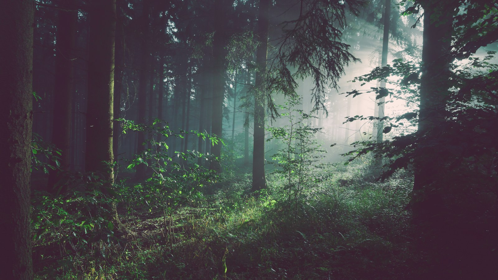
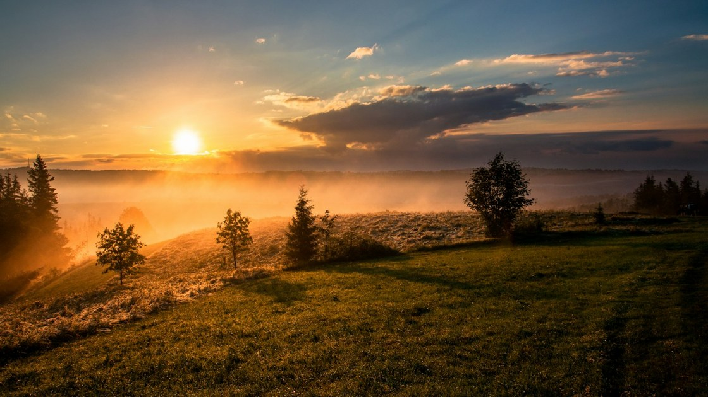

Documentary
mono Japan
English-language films on the craft, words, and ways of seeing that shape everyday life in Japan.
Explore the filmsIndependent creative studio
Films on Japanese culture and quiet spaces for meditation.
Explore KOMOREBISelected films
Series

Documentary
English-language films on the craft, words, and ways of seeing that shape everyday life in Japan.
Explore the films
Meditation
A meditation project shaped around sound, stillness, and the time to take a breath.
The studio
Light moving across a wall. A stitch in an old piece of cloth. At Elkino Studio, small details open a way into larger stories. We work from original sources where possible and leave room for the image and sound to tell the story.